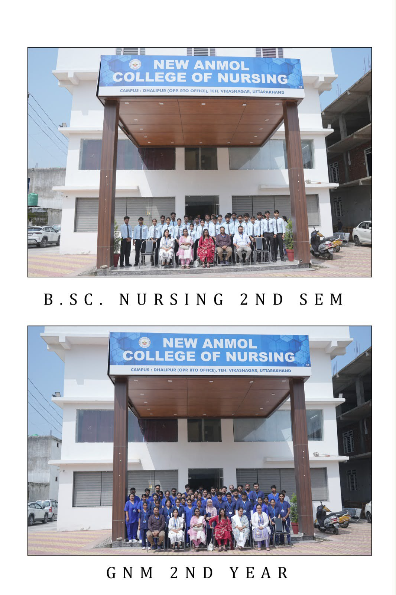
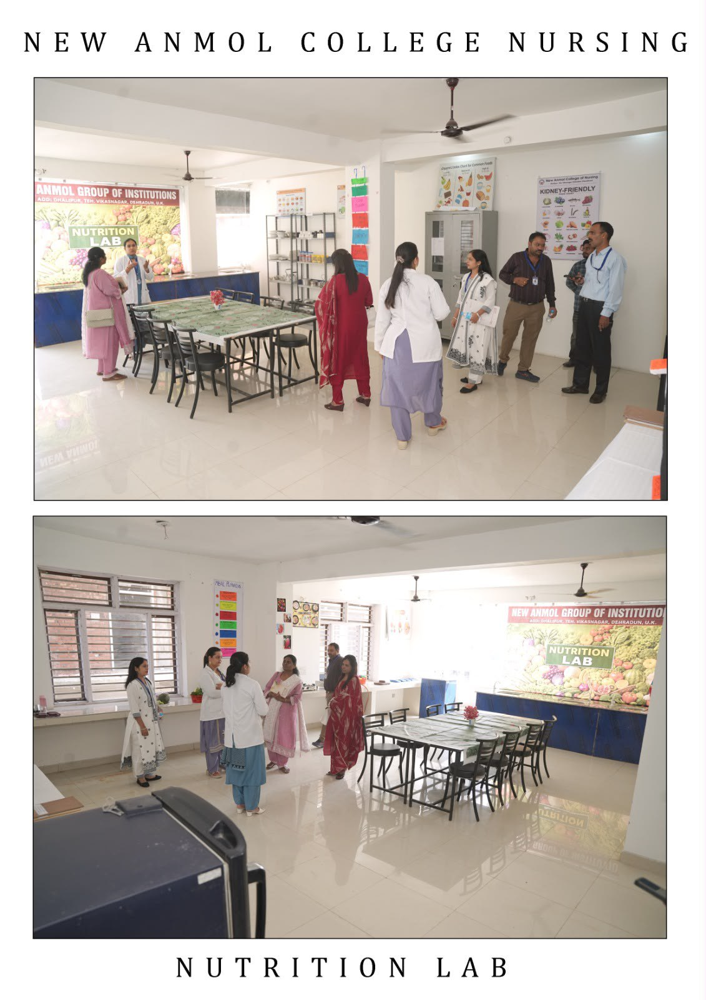
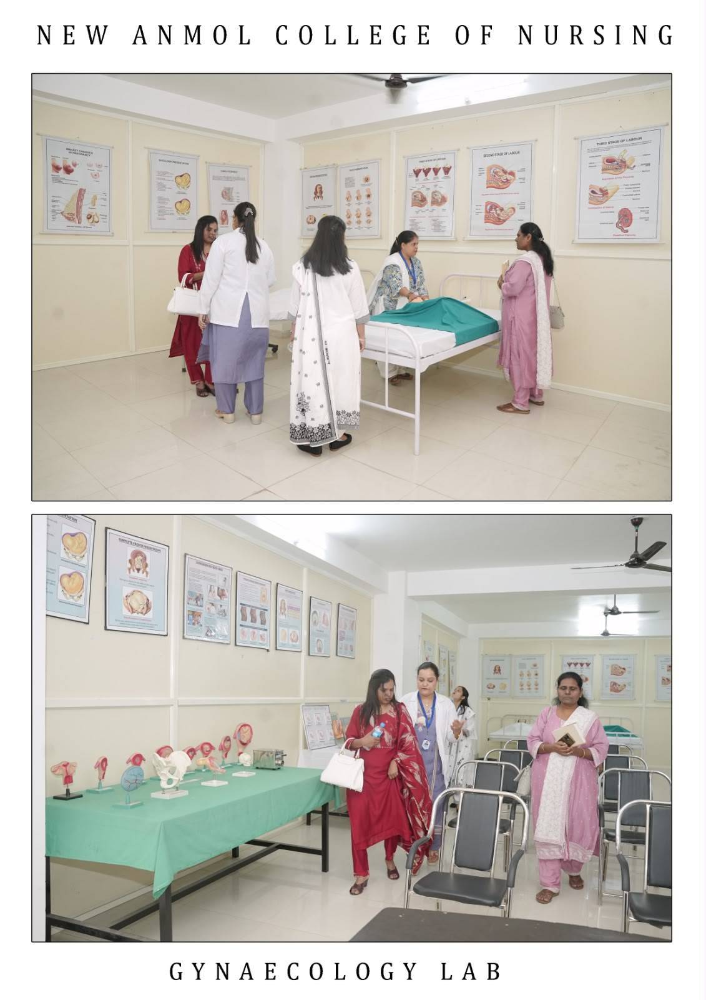
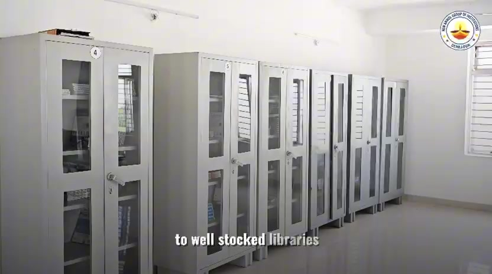
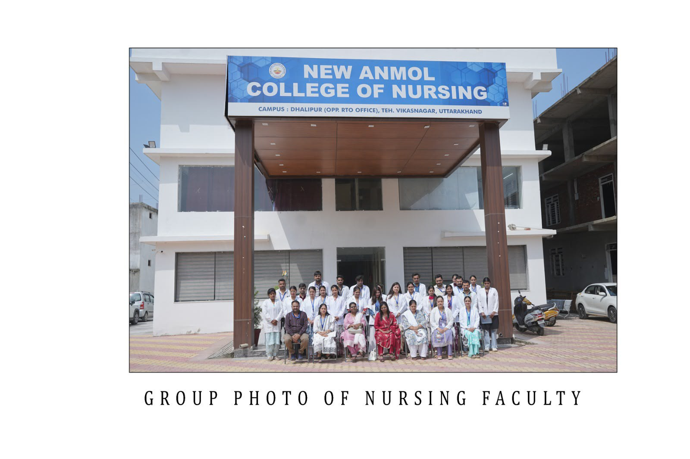

Independent learning
Taking increasing responsibility for academic progress.
Student life
Academic life brings together independent study, practical learning, teamwork, seminars and participation in a professional healthcare education environment.

Academic life
Students are encouraged to develop ideas, express opinions, think critically and become independent, self-motivated learners.
Learning takes place through conversation, individual responsibility, faculty guidance and engagement with different academic settings across each programme.
Taking increasing responsibility for academic progress.
Learning to participate and contribute alongside others.
Connecting daily study with clear professional objectives.
Using knowledge and critical thinking in practical contexts.
Learning by doing
Hands-on learning helps students connect theory with demonstrations, equipment, models and applied skills.
The campus includes specialised nursing laboratories, an Audio Visual Aids Room and computer facilities that support different forms of practical and academic work.
Explore campus facilities


Seminars & academic exchange
Conference rooms and seminar halls support seminars, lecture series and academic gatherings. These settings extend learning beyond the classroom through presentation, discussion and exchange.
Watch the campus filmCampus community
Academic development is supported by participation, responsibility and the shared purpose of professional preparation.
Student cohorts and the nursing faculty community are documented through authentic institutional photography.

Institutional gallery
The gallery brings together campus buildings, academic spaces, laboratories, student cohorts and faculty.